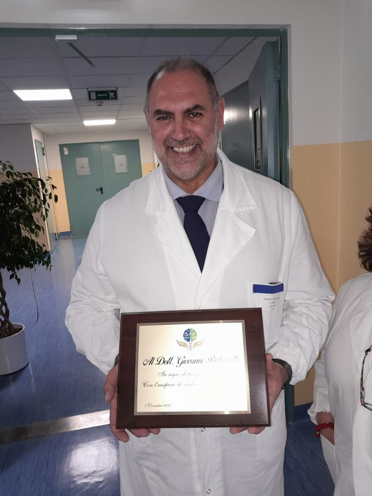
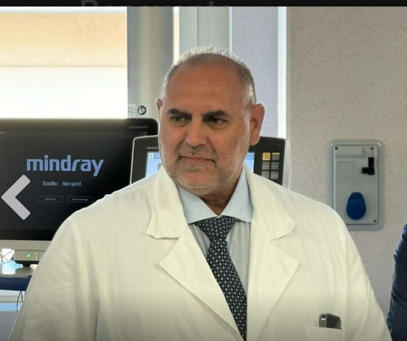

Punto di riferimento Nazionale
Dott. Giovanni
Parbonetti
Neurochirurgo – Medico Chirurgo
Direttore UOC Neurochirurgia · AORN San Pio – Presidio Rummo, Benevento


Neurochirurgo – Medico Chirurgo
Direttore UOC Neurochirurgia · AORN San Pio – Presidio Rummo, Benevento

Un reparto di riferimento regionale e nazionale, dotato delle più avanzate strumentazioni neurochirurgiche

Il Dott. Giovanni Parbonetti è un affermato neurochirurgo italiano, attualmente Primario e Direttore dell'Unità Operativa Complessa di Neurochirurgia dell'AORN San Pio di Benevento.
Formato presso la prestigiosa Università Cattolica del Sacro Cuore, opera sia in ambito pubblico che privato in diverse strutture su tutto il territorio nazionale. Il suo reparto esegue circa 800 interventi l'anno, con strumentazioni di ultima generazione e un team altamente specializzato.
L'UOC di Neurochirurgia dell'AORN San Pio è dotata delle più avanzate strumentazioni disponibili nel panorama neurochirurgico italiano
La fiducia e la riconoscenza dei nostri pazienti sono la nostra migliore testimonianza
Grande neurochirurgo con un'umanità indescrivibile. Ha saputo guidarmi e rassicurarmi in un momento di grande difficoltà, con professionalità assoluta e una gentilezza rara.
Ha eseguito un intervento magistrale su mio marito. Competenza e umanità incommensurabili. Grazie alla sua abilità e alla sua dedizione oggi mio marito sta bene.
Gli angeli esistono. Il Dott. Parbonetti è uno di loro. Non dimenticherò mai la sua disponibilità, la sua calma e la sua capacità di farmi sentire al sicuro.
Il Dott. Parbonetti è disponibile per visite specialistiche sia in ambito pubblico che privato. Contattaci per prenotare la tua visita.